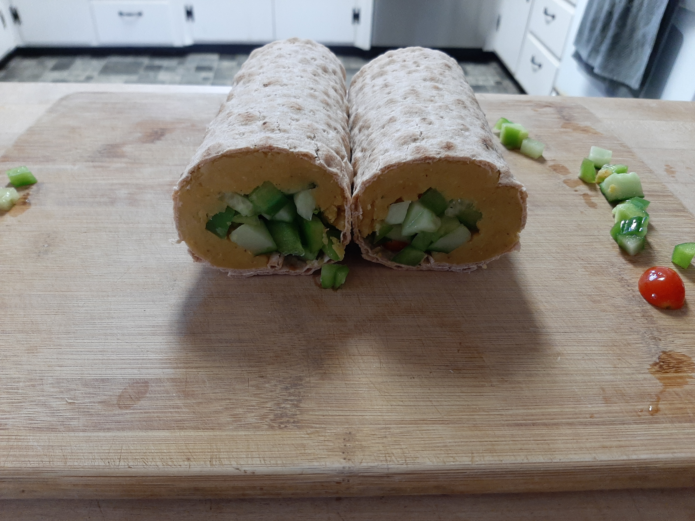

Lentil Wrap

Description
Lentil wrap with cucumbers, bell peppers, and cherry tomatoes.
Ingredients
- 1 whole wheat lavash bread
- 350-400g cooked red lentils (with garlic powder, chili powder, turmeric, and black pepper)
- 75-100g cucumber, diced
- 75-100g bell pepper, diced
- 75-100g cherry tomatoes, halved or quartered
Steps
- Place lavash bread on a wide flat surface (cutting board works well)
- Spread lentils evenly on the lower 4/5 of the lavash bread
- Toss the chopped veggies in a bowl until evenly mixed
- Add the chopped veggies on top of the lentils
- Roll the lavash bread so the veggies are in the middle and the bread overlaps itself
- Slice in half to form two even wraps